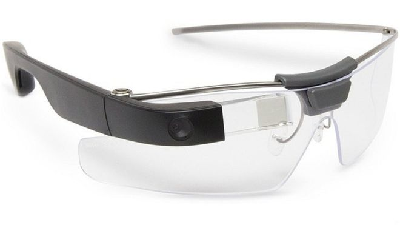

Deze jas is op de markt gekomen in de zomer van 2000. Deze word ook beschouwd als de eerste electronische wearable. Ze werden gedesigned in 4 stijlen, het jasje had strategische zakken voor de toenmalige Philips Xenium telefoon, mp3 speler en ook oortjes. Een centraal gelegen module connecteerde al deze apparaten, dit kon de drager dan gebruiken om te wisselen tussen de functies.
De Nike+ is een apparaat die je activiteiten bijhoudt. Deze meet constant de afstand en snelheid die je loopt of wandelt. Hij bestaat uit een klein transmitter apparaatje die vastzit aan de schoen of er zelfs in verwerkt is. Deze communiceert dan op zijn beurt met de Nike+ sportband, een receiver die in de iPod Nano steekt of direct met de 2nd Generation iPod Touch.
De Google Glass is dus eigenlijk een slimme bril, deze heeft een optisch hoofd gemonteerd design in de vorm van een bril. Google Glass toonde informatie zo als een smartphone maar dan zonder handen. Mensen die deze bril dragen kunnen dan via hun stem met het internet communiceren.
De Apple Watch is een smartwatch gemaakt door Apple Inc. Deze smartwatch maakt gebruikt van een fitness tracker en is ook gericht op gezondheids capaciteiten. Hier kan dus gebruik van gemaakt worden door middel van andere apparaten zoals de iPhone en dergelijke. Die heeft dan een wireless connectie met de smartwatch.
De Oculus Rift is een virtual reality headset gemaakt door Oculus VR, dit is een divisie van Facebook Inc. Oculus heeft een campagne gedaan in 2012 om geld in te zamelen voor het maken van de VR bril. Het project is heel succesvol geworden en heeft zelfs bijna $2.5 miljoen opgeleverd.